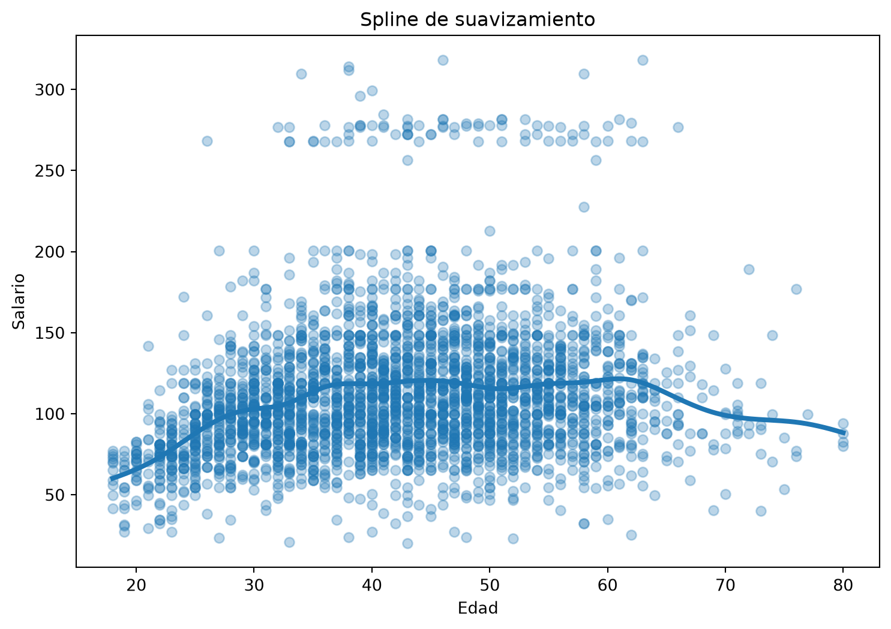
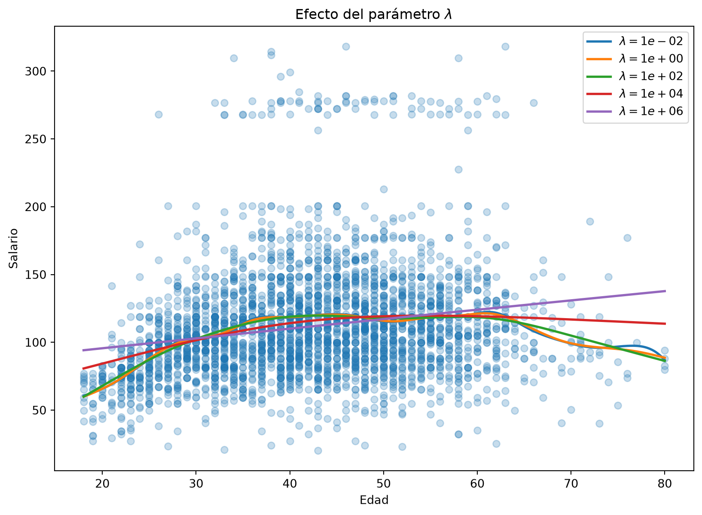
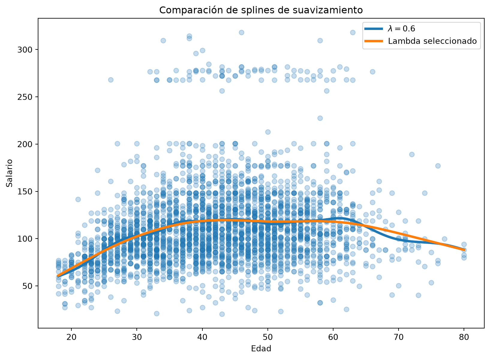
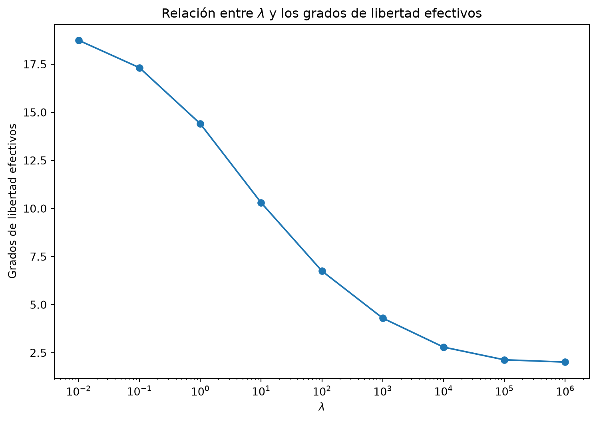
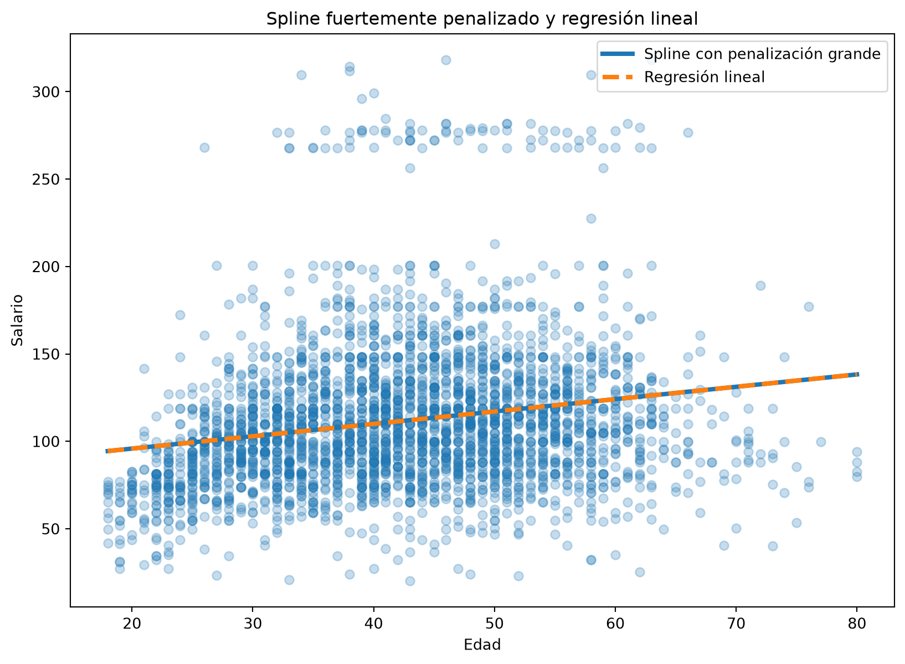

Código
import numpy as np
import pandas as pd
import matplotlib.pyplot as plt
from ISLP import load_data
from pygam import LinearGAM, sRecapitulando: en las secciones anteriores construimos modelos flexibles utilizando regresión polinómica, funciones escalonadas, funciones base y splines de regresión.
En un spline de regresión, una decisión importante consiste en determinar el número y la posición de los nodos (knots).
Los splines de suavizamiento (smoothing splines) utilizan una estrategia diferente. En lugar de controlar la flexibilidad seleccionando explícitamente un pequeño conjunto de nodos, buscamos una función \(g(x)\) que logre un equilibrio entre:
Matemáticamente, buscamos una función que minimice
\[\sum_{i=1}^{n} \left(y_i-g(x_i)\right)^2 + \lambda \int \left[g''(t)\right]^2dt.\]
El primer término mide el error de ajuste, mientras que el segundo penaliza funciones demasiado irregulares.
El parámetro \(\lambda\) controla el compromiso entre ambos objetivos:
📝 Diapositivas
Comenzamos importando las bibliotecas necesarias.
import numpy as np
import pandas as pd
import matplotlib.pyplot as plt
from ISLP import load_data
from pygam import LinearGAM, sLa biblioteca pygam permite ajustar modelos aditivos generalizados o GAMs (Generalized Additive Models).
Un spline de suavizamiento con un único predictor puede verse como un caso particular de un GAM. Por ahora utilizaremos pygam únicamente para estudiar splines de suavizamiento.
Los GAMs con varios predictores y diferentes tipos de términos los estudiaremos más adelante.
Utilizaremos nuevamente el conjunto de datos Wage.
Wage = load_data("Wage")
Wage.head()| year | age | maritl | race | education | region | jobclass | health | health_ins | logwage | wage | |
|---|---|---|---|---|---|---|---|---|---|---|---|
| 0 | 2006 | 18 | 1. Never Married | 1. White | 1. < HS Grad | 2. Middle Atlantic | 1. Industrial | 1. <=Good | 2. No | 4.318063 | 75.043154 |
| 1 | 2004 | 24 | 1. Never Married | 1. White | 4. College Grad | 2. Middle Atlantic | 2. Information | 2. >=Very Good | 2. No | 4.255273 | 70.476020 |
| 2 | 2003 | 45 | 2. Married | 1. White | 3. Some College | 2. Middle Atlantic | 1. Industrial | 1. <=Good | 1. Yes | 4.875061 | 130.982177 |
| 3 | 2003 | 43 | 2. Married | 3. Asian | 4. College Grad | 2. Middle Atlantic | 2. Information | 2. >=Very Good | 1. Yes | 5.041393 | 154.685293 |
| 4 | 2005 | 50 | 4. Divorced | 1. White | 2. HS Grad | 2. Middle Atlantic | 2. Information | 1. <=Good | 1. Yes | 4.318063 | 75.043154 |
Nos interesa estudiar la relación entre:
age: edad del trabajador;wage: salario.Extraemos estas dos variables.
age = Wage["age"]
y = Wage["wage"]Podemos visualizar los datos originales.
plt.figure(figsize=(9, 6))
plt.scatter(
age,
y,
alpha=0.3
)
plt.xlabel("Edad")
plt.ylabel("Salario")
plt.title("Relación entre edad y salario")
plt.show()La relación no parece completamente lineal. El salario parece aumentar durante las primeras décadas de la vida laboral y posteriormente estabilizarse o disminuir.
Nuestro objetivo será modelar esta relación mediante una curva suave.
pygampygam espera que los predictores se proporcionen en forma de una matriz.
Actualmente age es un vector:
np.asarray(age).shape(3000,)Lo transformamos en una matriz con una sola columna.
X_age = np.asarray(age).reshape(-1, 1)Ahora podemos revisar sus dimensiones.
X_age.shape(3000, 1)La instrucción
reshape(-1, 1)indica que queremos construir una matriz con:
Por ejemplo, un vector
\[(20,30,40,50)\]
se transforma conceptualmente en
\[\begin{pmatrix} 20\\ 30\\ 40\\ 50 \end{pmatrix}.\]
Esto no cambia los datos; solamente cambia la forma en la que están organizados.
Construiremos un primer modelo.
gam = LinearGAM(
s(0, lam=0.6)
)
gam.fit(X_age, y)LinearGAM(callbacks=[Deviance(), Diffs()], fit_intercept=True,
max_iter=100, scale=None, terms=s(0) + intercept, tol=0.0001,
verbose=False)Veamos las partes de esta instrucción.
LinearGAM()LinearGAM() utiliza una función de pérdida basada en errores cuadrados, por lo que es apropiado cuando la variable respuesta es cuantitativa.
En nuestro caso:
\[Y=\text{wage}.\]
s(0)La función
s(0)indica que queremos modelar la primera columna de la matriz \(X\) mediante un término suave.
Como X_age solamente contiene una columna,
s(0)corresponde a age.
lamEl argumento
lam=0.6corresponde al parámetro de penalización \(\lambda\) que estudiamos anteriormente.
Por tanto, pygam está resolviendo numéricamente un problema que busca equilibrar ajuste y suavidad.
Para visualizar el modelo no queremos obtener predicciones únicamente en las edades observadas.
Construiremos una secuencia de edades desde la edad mínima hasta la máxima.
age_grid = np.linspace(
age.min(),
age.max(),
500
)Para utilizar estos valores con pygam, también debemos convertirlos en una matriz.
age_grid_matrix = age_grid.reshape(-1, 1)Ahora calculamos las predicciones.
pred = gam.predict(age_grid_matrix)Podemos representar simultáneamente los datos y la curva estimada.
plt.figure(figsize=(9, 6))
plt.scatter(
age,
y,
alpha=0.3
)
plt.plot(
age_grid,
pred,
linewidth=3
)
plt.xlabel("Edad")
plt.ylabel("Salario")
plt.title("Spline de suavizamiento")
plt.show()
La curva resultante es suave y permite capturar una relación no lineal entre edad y salario.
Sin embargo, esta curva depende del valor elegido para \(\lambda\).
La pregunta ahora es:
Recordemos que el modelo minimiza una expresión de la forma
\[\text{Error de ajuste} + \lambda \left(\text{penalización por rugosidad}\right).\]
Por tanto, esperamos que:
\[\lambda\downarrow \quad\Longrightarrow\quad \text{mayor flexibilidad},\]
mientras que
\[\lambda\uparrow \quad\Longrightarrow\quad \text{mayor suavidad}.\]
Vamos a comprobarlo empíricamente.
Consideraremos valores de \(\lambda\) desde
\[10^{-2}\]
hasta
\[10^6.\]
lambdas = np.logspace(-2, 6, 5)
lambdasarray([1.e-02, 1.e+00, 1.e+02, 1.e+04, 1.e+06])La función np.logspace() construye valores igualmente espaciados en una escala logarítmica.
Esto resulta útil porque queremos comparar valores de \(\lambda\) que difieren por varios órdenes de magnitud.
Ajustaremos un spline diferente para cada valor de \(\lambda\).
plt.figure(figsize=(10, 7))
plt.scatter(
age,
y,
alpha=0.25
)
for lam in lambdas:
gam_lam = LinearGAM(
s(0, lam=lam)
)
gam_lam.fit(X_age, y)
pred_lam = gam_lam.predict(age_grid_matrix)
plt.plot(
age_grid,
pred_lam,
linewidth=2,
label=fr"$\lambda={lam:.0e}$"
)
plt.xlabel("Edad")
plt.ylabel("Salario")
plt.title(r"Efecto del parámetro $\lambda$")
plt.legend()
plt.show()
Observen cuidadosamente cómo cambia la forma de la curva.
Cuando \(\lambda\) es pequeño, la penalización tiene poca importancia y el modelo puede adaptarse más a los datos.
Cuando \(\lambda\) aumenta, la penalización adquiere mayor peso y la curva se vuelve progresivamente más suave.
Para valores suficientemente grandes de \(\lambda\), el ajuste comienza a aproximarse a una relación lineal.
El número de parámetros de un spline de suavizamiento no describe directamente su complejidad.
Por ello utilizamos los grados de libertad efectivos.
La relación general es
\[\lambda\uparrow \quad\Longrightarrow\quad df_\lambda\downarrow.\]
Es decir:
Esto conecta directamente con el compromiso sesgo-varianza:
\[\text{mayor flexibilidad} \quad\Longrightarrow\quad \text{menor sesgo y mayor varianza},\]
mientras que
\[\text{menor flexibilidad} \quad\Longrightarrow\quad \text{mayor sesgo y menor varianza}.\]
Hasta ahora hemos elegido \(\lambda\) manualmente.
Por ejemplo:
lam=0.6Pero no existe una razón particular para pensar que ese valor sea el mejor para nuestros datos.
Una estrategia más adecuada consiste en seleccionar \(\lambda\) utilizando los propios datos.
pygam proporciona el método
gridsearch()para realizar esta búsqueda.
Primero definimos una colección de posibles valores.
lam_grid = np.logspace(-3, 5, 30)Ahora realizamos la búsqueda.
gam_opt = LinearGAM(
s(0)
)
gam_opt.gridsearch(
X_age,
y,
lam=lam_grid,
progress=False
)LinearGAM(callbacks=[Deviance(), Diffs()], fit_intercept=True,
max_iter=100, scale=None, terms=s(0) + intercept, tol=0.0001,
verbose=False)gridsearch() ajusta modelos utilizando diferentes valores del parámetro de suavizamiento y selecciona una opción de acuerdo con el criterio utilizado internamente por pygam.
Podemos consultar el valor seleccionado.
gam_opt.lam[[np.float64(174.33288221999874)]]Es importante distinguir entre dos ideas:
Comparemos el modelo inicial, que utilizaba
\[\lambda=0.6,\]
con el modelo obtenido mediante la búsqueda.
pred_default = gam.predict(age_grid_matrix)
pred_opt = gam_opt.predict(age_grid_matrix)
plt.figure(figsize=(10, 7))
plt.scatter(
age,
y,
alpha=0.25
)
plt.plot(
age_grid,
pred_default,
linewidth=3,
label=r"$\lambda=0.6$"
)
plt.plot(
age_grid,
pred_opt,
linewidth=3,
label="Lambda seleccionado"
)
plt.xlabel("Edad")
plt.ylabel("Salario")
plt.title("Comparación de splines de suavizamiento")
plt.legend()
plt.show()
Dos valores diferentes de \(\lambda\) no necesariamente producen curvas visualmente muy diferentes.
Esto es importante: aumentar la complejidad del modelo solamente tiene sentido si los datos proporcionan evidencia de que esa complejidad adicional es útil.
Recordemos que teóricamente los grados de libertad efectivos pueden escribirse como
\[df_\lambda = \operatorname{tr}(S_\lambda).\]
No corresponden simplemente al número de coeficientes almacenados en el modelo.
Representan la flexibilidad efectiva que queda después de aplicar la penalización.
pygam calcula esta cantidad durante el ajuste.
Podemos inspeccionarla mediante:
gam_opt.statistics_["edof"]np.float64(6.061955860252559)Comparemos ahora varios valores de \(\lambda\).
resultados = []
for lam in np.logspace(-2, 6, 9):
modelo = LinearGAM(
s(0, lam=lam)
).fit(X_age, y)
resultados.append({
"lambda": lam,
"df_efectivos": modelo.statistics_["edof"]
})
df_lambda = pd.DataFrame(resultados)
df_lambda| lambda | df_efectivos | |
|---|---|---|
| 0 | 0.01 | 18.747147 |
| 1 | 0.10 | 17.320972 |
| 2 | 1.00 | 14.408054 |
| 3 | 10.00 | 10.305159 |
| 4 | 100.00 | 6.752265 |
| 5 | 1000.00 | 4.299985 |
| 6 | 10000.00 | 2.793035 |
| 7 | 100000.00 | 2.132564 |
| 8 | 1000000.00 | 2.014363 |
Ahora podemos visualizar la relación.
plt.figure(figsize=(9, 6))
plt.plot(
df_lambda["lambda"],
df_lambda["df_efectivos"],
marker="o"
)
plt.xscale("log")
plt.xlabel(r"$\lambda$")
plt.ylabel("Grados de libertad efectivos")
plt.title(r"Relación entre $\lambda$ y los grados de libertad efectivos")
plt.show()
Esta gráfica permite observar directamente la relación
\[\boxed{ \lambda\uparrow \quad\Longrightarrow\quad df_\lambda\downarrow }\]
que habíamos estudiado teóricamente.
Conceptualmente podemos pensar en dos maneras equivalentes de describir la complejidad:
\[\lambda \qquad\text{o}\qquad df_\lambda.\]
Un valor pequeño de \(\lambda\) corresponde a un número mayor de grados de libertad efectivos.
Un valor grande de \(\lambda\) corresponde a un número menor de grados de libertad efectivos.
En algunas implementaciones es posible buscar el valor de \(\lambda\) que produzca aproximadamente un número deseado de grados de libertad.
Sin embargo, para esta práctica nos concentraremos en la idea más importante:
\(\lambda\) controla la penalización y los grados de libertad efectivos describen la flexibilidad resultante.
La teoría de los splines de suavizamiento nos dice que cuando la penalización es muy grande,
\[\lambda\rightarrow\infty,\]
la curva tiende hacia una función lineal.
Podemos comprobar esta idea comparando un spline fuertemente penalizado con una regresión lineal.
Primero ajustamos la regresión lineal.
coef_lineal = np.polyfit(
age,
y,
deg=1
)
pred_lineal = np.polyval(
coef_lineal,
age_grid
)Ahora ajustamos un spline con una penalización muy grande.
gam_suave = LinearGAM(
s(0, lam=1e10)
)
gam_suave.fit(X_age, y)
pred_suave = gam_suave.predict(
age_grid_matrix
)Comparamos ambos ajustes.
plt.figure(figsize=(10, 7))
plt.scatter(
age,
y,
alpha=0.25
)
plt.plot(
age_grid,
pred_suave,
linewidth=3,
label="Spline con penalización grande"
)
plt.plot(
age_grid,
pred_lineal,
linestyle="--",
linewidth=3,
label="Regresión lineal"
)
plt.xlabel("Edad")
plt.ylabel("Salario")
plt.title("Spline fuertemente penalizado y regresión lineal")
plt.legend()
plt.show()
Las dos curvas deberían ser muy similares.
La razón es que una penalización muy grande fuerza a que
\[g''(x)\approx0.\]
Si la segunda derivada es cero, entonces la función es lineal:
\[g(x)=\beta_0+\beta_1x.\]
Con esto conectamos directamente la implementación computacional con el resultado teórico.
La biblioteca pygam se diseñó para trabajar con modelos aditivos generalizados (Generalized Additive Models, GAMs).
Un GAM permite construir modelos de la forma
\[Y = \beta_0+ f_1(X_1)+ f_2(X_2)+ \cdots+ f_p(X_p) + \varepsilon,\]
donde algunas de las funciones \(f_j\) pueden ser relaciones suaves estimadas a partir de los datos.
Por ejemplo, podríamos considerar un modelo conceptual como
\[\text{Wage} = \beta_0+ f_1(\text{Age})+ f_2(\text{Year})+ \text{Education} + \varepsilon.\]
En esta práctica solamente hemos considerado
\[\text{Wage} = \beta_0+ f(\text{Age})+ \varepsilon.\]
Por tanto, estamos utilizando únicamente un término suave y un predictor.
Los GAMs permiten combinar simultáneamente varios términos suaves, lineales y categóricos. Estudiaremos esa extensión más adelante.
Ajusta splines de suavizamiento utilizando los siguientes valores:
\[\lambda= 10^{-4},\; 10^{-2},\; 1,\; 10^2,\; 10^4,\; 10^8.\]
Representa todos los ajustes en una misma gráfica.
Preguntas:
Para cada uno de los valores de \(\lambda\) del ejercicio anterior, obtén los grados de libertad efectivos mediante
modelo.statistics_["edof"]Construye una tabla con las columnas:
| \(\lambda\) | Grados de libertad efectivos |
|---|---|
Después representa gráficamente
\[df_\lambda \quad\text{contra}\quad \lambda.\]
Utiliza escala logarítmica para el eje correspondiente a \(\lambda\).
Pregunta: ¿los resultados coinciden con la relación teórica esperada?
Utiliza gridsearch() para seleccionar automáticamente un valor de \(\lambda\).
Considera como candidatos
\[10^{-4}\leq\lambda\leq10^6.\]
Después:
Pregunta: ¿el procedimiento seleccionó un modelo relativamente flexible o relativamente suave?
Justifica tu respuesta utilizando tanto la gráfica como los grados de libertad efectivos.
Ajusta splines utilizando valores cada vez mayores de \(\lambda\).
Por ejemplo:
\[10^2,\quad 10^4,\quad 10^6,\quad 10^8,\quad 10^{10}.\]
Ajusta también una regresión lineal de wage sobre age.
Representa todos los modelos.
Pregunta: ¿qué observas conforme \(\lambda\) aumenta? Explica el resultado utilizando la penalización
\[\lambda\int[g''(t)]^2dt.\]
Sin ejecutar código, responde:
Repite el análisis utilizando year como predictor y wage como variable respuesta.
gridsearch().year–wage con la relación age–wage.Pregunta: ¿parece necesaria la misma cantidad de flexibilidad para modelar ambas relaciones? Justifica tu respuesta.
Supongamos que dos splines producen prácticamente el mismo desempeño predictivo:
¿Cuál preferirías?
Explica tu respuesta considerando: